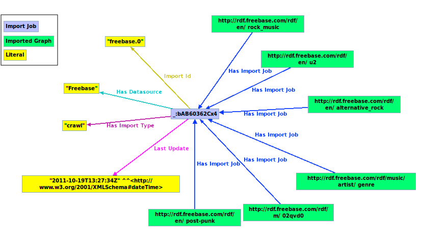

News
- 03/XX/2012: Version 0.5 released:
- 02/06/2012: Presentation: LDIF is presented at SEMTECHBIZ Berlin 2012 (Slides).
- 01/13/2012: Interview: semanticweb.com speaks with Christian Becker on how LDIF eases the job of working with Linked Data.
- 01/10/2012: Version 0.4 Scale-out released. Up till now, LDIF stored data purely in-memory which restricted the amount of data that could be processed. Version 0.4 provides two alternative implementations of the LDIF runtime environment which allow LDIF to scale to large data sets: 1. The new triple store backed implementation scales to larger data sets on a single machine with lower memory consumption at the expense of processing time. 2. The new Hadoop-based implementation provides for processing very large data sets on a Hadoop cluster, for instance within Amazon EC2. A comparison of the performance of all three implementations of the runtime environment is found on the LDIF benchmark page
- 11/03/2011: Version 0.3.1 released. Minor release: updated the music use case, optimized Entity Builder memory usage.
- 10/06/2011: Version 0.3 released. The
third
LDIF release provides data access modules for gathering data from the
Web via file download, crawling or accessing SPARQL endpoints. Web data
is cached locally for further processing. A scheduler provides
for launching data import and
integration jobs as well as for regularly updating the local cache with
data from remote sources. We also added a second use case that shows
how LDIF is used to gather and integrate data from several
music-related data sources.
- 8/25/2011: Version 0.2 released. The second
LDIF release provides improved performance (faster data loading,
parallelization of the data translation), smaller memory footprint, a
new N-Triples output module, new performance evaluation results for use
cases up to 100 million triples.
- 6/29/2011: Version 0.1 released. This alpha version provides for translating data that is represented using different source vocabularies into a single target vocabulary and for replacing different URIs that refer to the same real-world entity with a single target URI.
Contents
- About LDIF
- LDIF components
- Configuration options
- Quick start
- Examples
- Performance Evaluation
- Source code and development
- Version history
- Support and Feedback
- References
- Acknowledgments
1. About LDIF
The Web of Linked Data grows rapidly and contains data from a wide range of different domains, including life science data, geographic data, government data, library and media data, as well as cross-domain data sets such as DBpedia or Freebase. Linked Data applications that want to consume data from this global data space face the challenges that:
- data sources use a wide range of different RDF vocabularies to represent data about the same type of entity.
- the same real-world entity, for instance a person or a place, is identified with different URIs within different data sources.
This usage of different vocabularies as well as the usage of URI aliases makes it very cumbersome for an application developer to write SPARQL queries against Web data which originates from multiple sources. In order to ease using Web data in the application context, it is thus advisable to translate data to a single target vocabulary (vocabulary mapping) and to replace URI aliases with a single target URI on the client side (identity resolution), before starting to ask SPARQL queries against the data.
Up-till-now, there have not been any integrated tools that help application developers with these tasks. With LDIF, we try to fill this gap and provide an open-source Linked Data Integration Framework that can be used by Linked Data applications to translate Web data and normalize URI while keeping track of data provenance.
The LDIF integration pipeline consists of the following steps:
- Collect Data: Import modules locally replicate data sets via file download, crawling or SPARQL.
- Map to Schema: An expressive mapping language allows for translating data from the various vocabularies that are used on the Web into a consistent, local target vocabulary.
- Resolve Identities: An identity resolution component discovers URI aliases in the input data and replaces them with a single target URI based on user-provided matching heuristics.
- Output: LDIF outputs the integrated data and that can be written to file or to a QuadStore. For provenance tracking, LDIF employs the Named Graphs data model.
The figure below shows the schematic architecture of Linked Data applications that implement the crawling/data warehousing pattern. The figure highlights the steps of the data integration process that are currently supported by LDIF.

2. LDIF Components
The LDIF Framework consists of a Scheduler, Data Import and an Integration component with a set of pluggable modules. These modules are organized as data input, data transformation and data output.

Currently, we have implemented the following modules:
Scheduler
The Scheduler is used for triggering pending data import jobs or integration jobs. It is configured with an XML document (see Configuration) and offers several ways to express when and how often a certain job should be executed.
This component is useful when you want to load external data or run the integration periodically, otherwise you could just run the integration component.
Data Import
LDIF provides access modules for replicating data sets locally via file download, crawling or SPARQL. These different types of import jobs generate provenance metadata, which is tracked throughout the integration process. Import jobs are managed by a scheduler that can be configured to refresh (hourly, daily etc.) the local cache for each source.
Triple/Quad Dump Import
In order to get a local replication of data sets from the Web of Data the simplest way is to download a file containing the data set. The triple/quad dump import does exactly this, with the difference that LDIF generates a provenance graph for a triple dump import, whereas it takes the given graphs from a quad dump import as provenance graphs.
Crawler Import
Data sets that can only be accessed via dereferencable URIs are a good candidate for a crawler. In LDIF we thus integrated LDSpider for crawl import jobs. The configuration files for crawl import jobs are specified in the configuration section. Each crawled URI is put into a seperate named graph for provenance tracking.
SPARQL Import
Data sources that can be accessed via SPARQL are replicated by LDIF's SPARQL access module. The relevant data to be queried can be further specified in the configuration file for a SPARQL import job. Data from each SPARQL import job gets tracked by its own named graph.
Integration Runtime Environment
The integration component manages the data flow between the various stages/modules, the caching of the intermediate results and the execution of the different modules for each stage.
Data Input
The integration component expects input data to be represented as Named Graphs and be stored in N-Quads format accessible locally - the Web access modules convert any imported data into N-Quads format.
Transformation
LDIF provides the following transformation modules:
Data Translation
LDIF employs the R2R Framework
to translate Web data that is represented using terms from different
vocabularies into a single target vocabulary. Vocabulary mappings are
expressed using the R2R Mapping
Language.
The language provides for simple transformations as well as for more
complex structural transformations and property value transformations
such as normalizing different units of measurement or complex string
manipulations. The syntax of the
R2R Mapping Language is very similar to the query language SPARQL,
which eases the learning curve. The expressivity of the language
enabled us to deal with all requirements that we have encountered so
far when translating Linked Data from the Web into a target
representation (evaluation in [2]). Simple
class/property-renaming mappings which often form the majority in an
integration use case can also be expressed in OWL/RDFS (e.g ns1:class rdfs:subClassOf ns2:clazz).
An overview and examples for mappings are given on the R2R website.
The specification and user manual is provided as a separate document.
Identity Resolution
LDIF employs the Silk
Link Discovery Framework
to find different URIs that are used within different data sources to
identify the same real-world entity. For each set of duplicates which
have been identified by Silk, LDIF replaces all URI aliases with a
single target URI within the output data. In addition, it adds
owl:sameAs links pointing at the original URIs, which makes it possible
for applications to refer back to the data sources on the Web. If the
LDIF input data already contains owl:sameAs links, the referenced
URIs are normalized accordingly (optional, see configuration).
Silk is a
flexible identity
resolution framework that allows the user to specify identity
resolution heuristics which combine different types of matchers using
the declarative Silk - Link
Specification Language.
An overview and examples can be found on the Silk website.
Data Quality Assessment and Fusion
LDIF employs Sieve to provide data quality evaluation and cleansing. The procedure consists of two separate steps.
First, the Data Quality Assessment module assigns each Named Graph within the processed data one or several quality scores based on user-configurable
quality assessment policies. These policies combine a assessment function with the definition of the quality-related meta-information which
should be used in the assessment process.
Then the Data Fusion module takes the quality scores as input and resolves data conflicts based on the
assessment scores. The applied fusion functions can be configured on property level.
Sieve provides a basic set of quality assessment functions and fusion functions as well as an open interface for the implementation of additional
domain-specific functions.
An overview and examples can be found on the Sieve website.
Data Output
LDIF final and intermediate results can be written to file or to a QuadStore.
File Output
Two file output formats are currently supported by LDIF:
- N-Quads - dumps the data into a single N-Quads file, this file contains the translated versions of all graphs from the input graph set as well as the content of the provenance graph and sameAs-links;
- N-Triples - dumps the data into a single N-Triples file, since there exists no connection to the provenance data anymore after outputting it as N-Triple, the provenance data is discarded instead of being output.
QuadStore Output
Data is written to a QuadStore as SPARQL/Update stream. Here is a list of the supported stores.
Runtime Environments
The Runtime Environment for the integration component manages the data flow between the various stages/modules and the caching of the intermediate results.
In order to parallelize the data processing, the data is partitioned into entities prior to supplying it to a transformation module. An entity represents a Web resource together with all data that is required by a transformation module to process this resource. Entities consist of one or more graph paths and include a graph URI for each node. Each transformation module specifies which paths should be included into the entities it processes. Splitting the work into fine-granular entities, allows LDIF to parallelize the work.
LDIF provides three implementations of the Runtime Environment: 1. the in-memory version, 2. the RDF store version and 3. the Hadoop version. Depending of the size of your data set and the available computing resources, you can choose the runtime environment that best fits your use case.
Single machine / In-memory
The in-memory implementation keeps all intermediate results in memory. It is fast but its scalability is limited by the amount of available memory. For instance, integrating 25 million triples required 5 GB memory within one of our experiments. Parallelization is achieved by distributing the work (entities) to multiple threads.
Single machine / RDF Store
This implementation of the runtime environment uses an Jena TDB RDF store to store intermediate results. The communication between the RDF store and the runtime environment is realized in the form of SPARQL queries. This runtime environment allows you to process data sets that don't fit into memory anymore. The downside is that the RDF Store implementation is slower as the In-memory implementation.
Cluster / Hadoop
This implementation of the runtime environment allows you to parallelize the work onto multiple machines using Hadoop. Each phase in the integration flow has been ported to be executable on a Hadoop cluster. Some initial performance figures comparing the run times of the in-memory, quad store and Hadoop version against different data set sizes are provided in the Benchmark Wiki.
Next steps for LDIF
Over the next months, we plan to extend LDIF along the
following lines:
- Flexible integration workflow. Currently the
integration flow is static and can only be influenced by predefined
configuration parameters. We plan to make the workflow and its
configuration more flexible in order to make it easier to include
additional modules that cover other data integration aspects.
3. Configuration Options
This section describes how LDIF configuration files look like and which parameters you can modify to change the runtime behavior of LDIF.
Schedule Job Configuration
A Schedule Job updates the representation of external sources in the
local cache and it is configured with an XML document, whose structure
is described by this XML
Schema.
The scheduler configuration is the top configuration file that
references all the other configuration files like the for the import
jobs for accessing remote sources and for the integration job.
A typical configuration document looks like this:
<scheduler xmlns:xsi="http://www.w3.org/2001/XMLSchema-instance"
xmlns="http://www4.wiwiss.fu-berlin.de/ldif/">
<properties>scheduler.properties</properties>
<dataSources>datasources</dataSources>
<importJobs>importJobs</importJobs>
<integrationJobs>integration-config.xml</integrationJob>
<dumpLocation>dumps</dumpLocation>
</scheduler>
It has the following elements:
- properties - the path to a Java properties file for configuration parameters, see below for more details;
- dataSources - a directory containing the Data Sources configurations;
- importJobs - a directory containing the Import Jobs configurations;
- integrationJob - a document containing the Integration Job configurations;
- dumpLocation - a directory where the local dumps should be
cached
Both relative and absolute paths are supported.
Configuration Properties
In the Schedule Job configuration file you can specify a (Java) properties file to further tweak certain parameters concerning the workflow. Here is a list with all properties that can be set at the moment and the possible values for each property:
-
provenanceGraphURI
Specify the graph where the provenance information is stored. Default graph name: http://www4.wiwiss.fu-berlin.de/ldif/provenanceprovenanceGraphURI = http://www4.wiwiss.fu-berlin.de/ldif/provenance
-
oneTimeExecution
If true the scheduler executes all the Jobs at most once. Import Jobs are evaluated first and then (as all of these have finished) the integration job starts. Default: falseoneTimeExecution = true | false
Integration Job Configuration
An Integration Job is configured with an XML document, whose
structure is described by this XML
Schema.
The current structure is very simple because the integration flow
is static at the moment - something that will change in future
releases. The config file specifies amongst other things how often the
whole integration workflow should be executed. It should be noted that
when an integration job starts, it only works on fully imported data.
Data of import jobs that did not finish before the integration starts
is ignored - the only exception is if the oneTimeExecution
configuration property is set to true; then the integration waits for
all import jobs to finish.
A typical configuration document looks like this:
<integrationJob xmlns:xsi="http://www.w3.org/2001/XMLSchema-instance"
xmlns="http://www4.wiwiss.fu-berlin.de/ldif/">
<properties>test.properties</properties>
<sources>
<source>dumps</source>
</sources>
<linkSpecifications>linkSpecs</linkSpecifications>
<mappings>mappings</mappings>
<outputs>
<output>
<file>
<path>output.nq</path>
<format>nquads</format>
</file>
</output>
</outputs>
<runSchedule>daily</runSchedule>
</integrationJob>
It has the following elements:
- properties - the path to a Java properties file for configuration parameters, see below for more details;
- sources - each source specifies a path (to a file or a directory) in the local or distributed file system,
all files must be in N-Quads format and may
be compressed (.gz, .zip or .bz2);
- linkSpecifications - a directory containing the Silk link specifications;
- mappings - a directory containing the R2R mappings;
- outputs - each output specifies a destination where data are written to, both file and SPARQL/Update outputs are supported;
- runSchedule - how often the integration is expected to be run. Valid values are: onStartup, always, hourly, daily, weekly, monthly, yearly and never.
Both relative and absolute paths are supported. In this case there is a root directory with the config file and the test.properties file in it. Furthermore the following directories would be nested in the root directory: linkSpecs, sources and mappings. Data sets have to be in a local directory.
Configuration Properties for
the Integration Job
In the Integration Job configuration file you can specify a (Java) properties file to further tweak certain parameters concerning the integration workflow. Here is a list with all properties that can be set at the moment and the possible values for each property:
-
output
Specify if all input quads from the input should be included in the output file or only the quads that were mapped/translated by LDIF. Default: mapped-onlyoutput = all | mapped-only
-
rewriteURIs
Specify if URI aliases in the input data should be rewritten to a single target URI in the output data. Default: truerewriteURIs = true | false
-
provenanceGraphURI
Specify the graph containing the provenance information. Quads from this graph are only written to the final output data set and not processed any further in the integration workflow. Default graph name: http://www4.wiwiss.fu-berlin.de/ldif/provenanceprovenanceGraphURI = http://www4.wiwiss.fu-berlin.de/ldif/provenance
-
validateSources
Source data sets, R2R mappings and Silk link specifications are all validated before starting with the actual integration. Since the syntax validation of the sources (N-Triples / N-Quads files) takes some time (about 15s/GB), if you already know that they are correct, it is possible to disable this step by setting the property to false. Default: truevalidateSources = true | false
-
discardFaultyQuads
If LDIF finds a (syntax) error - like spaces in URIs - in the source data, it does not progress with the integration to give you the opportunity to fix these errors first. However, sometimes you just don't care that some quads are faulty and want them to be ignored instead, so that the overall integration can still proceed. Set this property to true in order to ignore syntax errors in the source data sets. Default: falsediscardFaultyQuads = false | true
-
useExternalSameAsLinks
Besides discovering equal entities in the identity resolution phase, LDIF also offers the opportunity to input these relationships in form of owl:sameAs links. The NT/N-Quads file with these sameAs-links has to be placed in the source directory with the other data sets. If you don’t want to use sameAs-links from the input data, set this property to false. Default: trueuseExternalSameAsLinks = true | false
-
outputFormat
Although the default output format is N-Quads, LDIF also offers a triple output as N-Triple. Default: nqoutputFormat = nq | nt
- entityBuilderType
Specify the type of the entity builder component used for the local execution profile of LDIF. This choice heavily influences the performance and memory foot print. For large data sets and/or low memory machines it is a good idea to set this to quad-store because the in-memory version of LDIF is very memory intensive. Default: in-memoryentityBuilderType = in-memory | quad-store
- quadStoreType
Specify the concrete store that should be used as backend for the quad store version, see configuration property entityBuilderType. Right now there is only one store, Jena TDB, that is supported by LDIF, so this property doesn't need to be set explicitly. Default: tdbquadStoreType = tdb
- databaseLocation
This property allows to set the location of the data base on the local file system. This value is used by the quad store system to configure its database location. Default: The temporary directory of the operating systemdatabaseLocation = Path-To-Database-Dir
-
uriMinting
Specify if output resources should be given an URI within the target namespace. URI minting. Default: falseuriMinting = true | false
-
uriMintNamespace
Specify the namespace into which the URIs of all output resources are translated, if URI minting is enabled. Default: http://www4.wiwiss.fu-berlin.de/ldif/resource/uriMintNamespace = http://www4.wiwiss.fu-berlin.de/ldif/resource/
-
uriMintLabelPredicate
The value of this property is a space separated list of property URIs, which will be used to expand the name space URI specified with uriMintNamespace. For each entity one value of the specified URIs is used to act as the local part of the minted URI. If there are many values to pick from, the max value (lexicographic order) is taken. If no value could be found for any of the properties, the URI of the entity is not minted. Note that there is no way to prevent name clashes at the moment.uriMintLabelPredicate = http://www.w3.org/2000/01/rdf-schema#label http://www4.wiwiss.fu-berlin.de/ldif/property-example/id
-
uriMintLanguageRestriction
If set this parameter restricts the values that are considered for URI minting to specific language literals/tags. The value of this parameter is a whitespace separated list of language tags. Default: not seturiMintLanguageRestriction = en fr es
-
outputQualityScores
Specify if the data quality scores quads (generated by the Data Quality Assessment module) should be also included in the output. Default: falseoutputQualityScores = true | false
-
qualityFromProvenanceOnly
Specify if only the content of the provenance graph should be used in the data quality evaluation. Default: falsequalityFromProvenanceOnly = true | false
Import Job Configuration
An Import Job is configured with an XML document, whose structure is
described by this XML
Schema.
It has the following elements:
- internalId - A unique ID, which will be used internally to
track the import job and its files like data and provenance;
- dataSource - A reference to a data
source to state from which source this job imports data;
- one kind of importJob - There has to be exactly one import job element, which can be either quadImportJob, tripleImportJob, crawlImportJob or sparqlImportJob;
- refreshSchedule - how often the integration is expected to be run. Valid values are: onStartup, always, hourly, daily, weekly, monthly, yearly and never.
LDIF supports four different mechanisms to import external data:
- Quad Import Job – import N-Quad dumps
- Triple Import Job – import RDF/N-Triple dumps
- Crawl Import Job – import by dereferencing URIs as RDF data, using the LDSpider Web Crawling Framework
- SPARQL Import Job – import by querying a SPARQL endpoint
Quad Import
A typical config file for a Quad Import Job looks like this:
<importJob xmlns="http://www4.wiwiss.fu-berlin.de/bizer/ldif">
<internalId>dBpedia.0</internalId>
<dataSource>dBpedia</dataSource>
<refreshSchedule>daily</refreshSchedule>
<quadImportJob>
<dumpLocation>http://dbpedia.org/dump.nq</dumpLocation>
</quadImportJob>
</importJob>
Triple Import
In a triple import you use the tripleImportJob element instead of the quadImportJob element:
<importJob xmlns="http://www4.wiwiss.fu-berlin.de/bizer/ldif">
<internalId>dBpedia.0</internalId>
<dataSource>dBpedia</dataSource>
<refreshSchedule>daily</refreshSchedule>
<tripleImportJob>
<dumpLocation>http://dbpedia.org/dump.nt</dumpLocation>
</tripleImportJob>
</importJob>
SPARQL Import
In a SPARQL import job the sparqlImportJob element specifies the endpoint that will be queried for data and a restriction pattern - note that angle brackets of URIs have to be escaped using < and >. This restriction pattern is joined with the pattern ?s ?p ?o, which is also the only pattern in the Construct part of the generated SPARQL Construct query. This means that all the triples of the entities matching the restriction in the pattern element are collected. It is also possible to specify a graph with the graphName element and to restrict the number of imported triples with the tripleLimit element. All but the endpointLocation is optional.
<importJob xmlns:xsi="http://www.w3.org/2001/XMLSchema-instance"
xmlns="http://www4.wiwiss.fu-berlin.de/ldif/">
<internalId>musicbrainz.3</internalId>
<dataSource>MusicBrainz_Talis</dataSource>
<refreshSchedule>monthly</refreshSchedule>
<sparqlImportJob>
<endpointLocation>http://api.talis.com/stores/musicbrainz/services/sparql</endpointLocation>
<tripleLimit>100000</tripleLimit>
<sparqlPatterns>
<pattern>?s a <http://purl.org/ontology/mo/MusicArtist></pattern>
</sparqlPatterns>
</sparqlImportJob>
</importJob>
Crawler Import
A crawl import job is configured by specifying one or more seed URIs
as starting points of the crawl, predicates that the crawler should
follow to discover new resources and optionally the maximum number of
levels to crawl, meaning the maximum distance to one of the seed URIs.
Also optionally the maximum number of resources to crawl can be
specified. Of each crawled resource all received triples are stored.
<importJob xmlns:xsi="http://www.w3.org/2001/XMLSchema-instance"
xmlns="http://www4.wiwiss.fu-berlin.de/ldif/">
<internalId>freebase.0</internalId>
<dataSource>Freebase</dataSource>
<refreshSchedule>onStartup</refreshSchedule>
<crawlImportJob>
<seedURIs>
<uri>http://rdf.freebase.com/ns/en.dance-pop</uri>
<uri>http://rdf.freebase.com/ns/en.radiohead</uri>
<uri>http://rdf.freebase.com/ns/en.art_rock</uri>
</seedURIs>
<predicatesToFollow>
<uri>http://rdf.freebase.com/ns/music.artist.genre</uri>
<uri>http://rdf.freebase.com/ns/music.genre.albums</uri>
<uri>http://rdf.freebase.com/ns/music.genre.artists</uri>
<uri>http://rdf.freebase.com/ns/music.album.genre</uri>
<uri>http://rdf.freebase.com/ns/music.album.artist</uri>
<uri>http://rdf.freebase.com/ns/music.artist.album</uri>
<uri>http://rdf.freebase.com/ns/influence.influence_node.influenced_by</uri>
<uri>http://rdf.freebase.com/ns/music.artist.label</uri>
<uri>http://rdf.freebase.com/ns/music.record_label.artist</uri>
<uri>http://rdf.freebase.com/ns/music.producer.releases_produced</uri>
<uri>http://rdf.freebase.com/ns/music.release.producers</uri>
<uri>http://rdf.freebase.com/ns/music.release.album</uri>
<uri>http://rdf.freebase.com/ns/music.producer.releases_produced</uri>
</predicatesToFollow>
<levels>5</levels>
<resourceLimit>50000</resourceLimit>
</crawlImportJob>
</importJob>
Provenance Metadata
The result of each import contains provenance metadata, whose
structure is described by this ontology.
For each imported graph, provenance information will contain:
- import date and time,
- chosen import type,
- original location (only for Quad and Triple Import Jobs).
A typical provenance graph for a Crawl Import Job looks like this:
A typical provenance graph for a Quad Import Job looks like this:
<http://dbpedia.org/graphA> <http://www.w3.org/1999/02/22-rdf-syntax-ns#type> <http://www4.wiwiss.fu-berlin.de/ldif/ImportedGraph> <http://www4.wiwiss.fu-berlin.de/ldif/provenance> .
<http://dbpedia.org/graphA> <http://www4.wiwiss.fu-berlin.de/ldif/hasImportJob> _:dbpedia0 <http://www4.wiwiss.fu-berlin.de/ldif/provenance> .
<http://dbpedia.org/graphB> <http://www.w3.org/1999/02/22-rdf-syntax-ns#type> <http://www4.wiwiss.fu-berlin.de/ldif/ImportedGraph> <http://www4.wiwiss.fu-berlin.de/ldif/provenance> .
<http://dbpedia.org/graphB> <http://www4.wiwiss.fu-berlin.de/ldif/hasImportJob> _:dbpedia0 <http://www4.wiwiss.fu-berlin.de/ldif/provenance> .
_:dbpedia0 <http://www.w3.org/1999/02/22-rdf-syntax-ns#type> <http://www4.wiwiss.fu-berlin.de/ldif/ImportJob> <http://www4.wiwiss.fu-berlin.de/ldif/provenance> .
_:dbpedia0 <http://www4.wiwiss.fu-berlin.de/ldif/importId> "dBpedia.0" <http://www4.wiwiss.fu-berlin.de/ldif/provenance> .
_:dbpedia0 <http://www4.wiwiss.fu-berlin.de/ldif/lastUpdate> "2011-09-21T19:01:00-05:00"^^<http://www.w3.org/2001/XMLSchema#dateTime> <http://www4.wiwiss.fu-berlin.de/ldif/provenance> .
_:dbpedia0 <http://www4.wiwiss.fu-berlin.de/ldif/hasDatasource> "dBpedia" <http://www4.wiwiss.fu-berlin.de/ldif/provenance> .
_:dbpedia0 <http://www4.wiwiss.fu-berlin.de/ldif/hasImportType> "quad" <http://www4.wiwiss.fu-berlin.de/ldif/provenance> .
_:dbpedia0 <http://www4.wiwiss.fu-berlin.de/ldif/hasOriginalLocation> "http://mes.smw-lde-eu.s3.amazonaws.com/dBpedia_dump.nt.bz2" <http://www4.wiwiss.fu-berlin.de/ldif/provenance> .
Data Source Configuration
A Data Source is configured with an XML document, whose structure is
described by this XML
Schema. It contains human readable information about a data source.
The label element should
be a unique string in each integration use case, because it will be
referenced by the import jobs.
<dataSource>
<label>DBpedia</label>
<description>DBpedia ist an RDF version of Wikipedia</description>
<homepage>http://dbpedia.org</homepage>
</dataSource>
4. Quick start
This section explains you how to run the different versions of LDIF.
Single machine / In-memory
To see LDIF in action, please follow these steps:
- download the latest release
- unpack the archive and change into the extracted directory ldif-0.5
- run LDIF on the Music example
- under Linux / Mac OS type:
bin/ldif examples/music/light/schedulerConfig.xml
bin\ldif.bat examples\music\light\schedulerConfig.xml
The example will run in about 3 minutes. Integration results will be
written into integrated_music_light.nq in the working
directory, containing both integrated data and provenance metadata.
Learn more about LDIF configuration by looking at the Schedule Job Configuration (examples/music/light/schedulerConfig.xml)
and the Integration Job
Configuration (examples/music/light/integrationJob.xml)
Single machine / RDF Store
To see LDIF running with a quad store (TDB) as backend, please follow these steps:
- download the latest release
- unpack the archive and change into the extracted directory ldif-0.5
- run LDIF on the Music example
- under Linux / Mac OS type:
bin/ldif examples/music/light/schedulerConfigTDB.xml
quadStoreType and databaseLocation (see the Configuration section from more details).
The example will run in about 3 minutes. Integration results will be
written into integrated_music_light.nq in the working
directory, containing both integrated data and provenance metadata.
Learn more about LDIF configuration by looking at the Schedule Job Configuration (examples/music/light/schedulerConfig.xml)
and the Integration Job
Configuration (examples/music/light/integrationJob.xml)
Cluster / Hadoop
To see LDIF running on a Hadoop cluster, please follow these steps:
- set up and configure a Hadoop (0.20.2) cluster
- ssh to a cluster node
- download the latest LDIF release
- unpack the archive and change into the extracted directory ldif-hadoop-0.5
- run LDIF on the Music example
hadoop jar lib/ldif-hadoop-0.5.jar scheduler examples/music/light/schedulerConfig.xml
This will import the data sets as defined by the LDIF import jobs and copies them afterwards to the Hadoop file system. Integration results will be written into the /user/hduser/integrated_music_light.nq directory in the Hadoop distributed file system (HDFS). You can check the content of this directory using the following command: hadoop dfs -ls /user/hduser/integrated_music_light.nq
Please note that most of the run time for this small use case is dominated by the Hadoop overhead.
Learn more about Hadoop configuration by looking at our Benchmark and Troubleshooting wiki pages.
In order to have a cleaner console output, consider replacing the Hadoop default logging configuration ([HADOOP-HOME]/conf/log4j.properties) with our customized log4j.properties file.
Here is a list of Hadoop configuration parameters that can be useful to tune when running LDIF with big datasets:
| Parameter | Description | Recommended value |
|---|---|---|
| mapred.job.reuse.jvm.num.tasks | Reuse of a JVM across multiple tasks of the same job | -1 |
| mapred.min.split.size | The minimum size chunk that map input should be split into | 268435456 |
| mapred.map.child.java.opts | Specify the heap-size for the child jvms | -Xmx1G |
| mapred.output.compress | Enable output compression | true |
| mapred.output.compression.type | How the compression is applied | BLOCK |
| mapred.output.compression.code | The compression codec class that is used for compression/decompression | org.apache.hadoop.io.compress.GzipCodec |
5. Examples
This section presents two LDIF usage examples.
- The Music example shows how different music-related data sources are accessed using the LDIF Web data access components and integrated afterwards using the LDIF data translation and identity resolution modules.
- The Life Science example shows how LDIF
is used to integrate several local RDF dumps of life science data sets.
5.1 Using LDIF to integrate Data from the Music Domain
This example shows how LDIF is applied to integrate data describing musical artists, music albums, labels and genres from the following remote sources:
- DBpedia
- Freebase
- MusicBrainz (at Talis)
- BBC Music
Configurations
Each source is accessed via the appropriate access module. The DBpedia data set is downloaded, Freebase is crawled because of lack of other access possibilities, MusicBrainz and BBC Music are both accessed via SPARQL because no download of the data set is available and crawling is in general inferior, because you might not gather all the instances you are interested in.
The following import job configuration files are used for the different sources:- DBpedia Dump-Properties, Dump-Types
- Freebase Crawl
- MusicBrainz Sparql-MusicArtist, Sparql-Label, Sparql-Record
- BBC Music Sparql-MusicArtist , Sparql-Record, Sparql-Birth, Sparql-Death
The following mapping file provides for translating the source data sets into our target vocabulary:
- R2R mapping file: mappings.ttl
The target vocabulary is a mix of existing ontologies like FOAF, Music Ontology, Dublin Core, DBpedia etc.
The following Silk identity resolution heuristics are used to find music artists, labels and albums that are described in multiple data sets:
- Silk link specification: musicLinkSpec.xml
Music artist and record instances are integrated from all the
sources.
Labels and genres are integrated only from fewer sources since not all
of them provide this information.
For example MusicBrainz does not
support genre information.
Execution instructions
In order to run the example, please download LDIF and run the following commands:
- change into the LDIF root directory;
- under Linux / Mac OS type:
bin/ldif examples/music/full/schedulerConfig.xml
bin\ldif.bat examples\music\full\schedulerConfig.xml
Please note that the execution of the import jobs can take about 3 hours, mainly due to crawling, which is relatively slow compared to other access methods.
It is also available a light version of the use case, which runs in less than 5 minutes:
- change into the LDIF root directory;
- under Linux / Mac OS type:
bin/ldif examples/music/light/schedulerConfig.xml
bin\ldif.bat examples\music\light\schedulerConfig.xml
Output
The following graph shows a portion of the LDIF output describing Bob Marley:

5.2 Using LDIF to integrate Life Science Data
This example shows how LDIF is applied to integrate data originating from five Life Science sources.
The example is taken from a joint project with Vulcan Inc.
and ontoprise GmbH about
extending Semantic
Media Wiki+ with a Linked Data Integration Framework.
In this example, the following data sources are translated into a
common Wiki ontology:
- Allen Mouse Brain Atlas is a growing collection of online public resources integrating extensive gene expression and neuroanatomical data.
- KEGG GENES, a collection of gene catalogs for all complete genomes generated from publicly available resources, mostly NCBI RefSeq
- KEGG Pathway, a collection of pathway maps representing knowledge on the molecular interaction and reaction networks
- PharmGKB, which provides data on gene information, disease and drug pathways, and SNP variants
- Uniprot, which provides information on protein sequence and function
Configurations
A subset of these datasets can be found in the sub-directory examples/life-science/sources
of the LDIF release.
The following mapping file provides for translating the vocabularies used by the source data sets into the Wiki ontology.
- R2R mapping file: ALL-toWiki.r2r.ttl
The following Silk identity resolution heuristics are used to find genes and other expressions that are described in multiple data sets.
To run the example, please download LDIF and use the following LDIF
configuration. The configuration options are explained in the Section Configuration below.
<integrationJob>
<properties>life-science.properties</properties>
<sources>
<source>sources</source>
</sources>
<linkSpecifications>linkSpecs</linkSpecifications>
<mappings>mappings</mappings>
<outputs>
<output>
<file>
<path>output.nq</path>
</file>
</output>
</outputs>
</integrationJob>
Execution instructions
- Change into the LDIF root directory.
- under Linux / Mac OS type:
bin/ldif-integrate examples/life-science/integration-config.xml
bin\ldif-integrate.bat examples\life-science\integration-config.xml
Examples of data translation
In the following, we explain the data translation that is performed for the example of one entity that is described in two input data sets:
- Example input (reduced
to two source data sets, represented using the TriG Syntax):
01: @prefix aba-voc: <http://brain-map.org/gene/0.1#> .
02: @prefix rdfs: <http://www.w3.org/2000/01/rdf-schema#> .
03: @prefix uniprot: <http://purl.uniprot.org/core/> .
04:
05: <file:///aba_mouse_20101010_1000.nq> {
06: <http://brain-map.org/mouse/brain/Oprk1.xml> aba-voc:entrezgeneid "18387" ;
07: aba-voc:gene-aliases _:Ab12290 .
08: _:Ab12290 <http://brain-map.org/gene/0.1#aliassymbol> "Oprk1" .
09: }
10:
11: <file:///datasets/uniprot-organism-human-reviewed-complete_1000.nq> {
12: <http://purl.uniprot.org/uniprot/P61981> rdfs:seeAlso <http://purl.uniprot.org/geneid/18387> .
13: <http://purl.uniprot.org/geneid/18387> uniprot:database "GeneID" .
14: <http://purl.uniprot.org/uniprot/P61981> uniprot:encodedBy <file:///storage/datasets/uniprot-organism-human-reviewed-complete.rdf#_503237333438003B> .
15: }
- Example output :
01: @prefix smwprop: <http://mywiki/resource/property/> .
02: @prefix xsd: <http://www.w3.org/2001/XMLSchema#> .
03:
04: <file:///aba_mouse_20101010_1000.nq> {
05: <http://brain-map.org/mouse/brain/Oprk1.xml> smwprop:EntrezGeneId "18387"^^xsd:int .
06: <http://brain-map.org/mouse/brain/Oprk1.xml> smwprop:GeneSymbol "Oprk1"^^xsd:string .
07: }
08:
09: <file:///datasets/uniprot-organism-human-reviewed-complete_1000.nq> {
10: <http://brain-map.org/mouse/brain/Oprk1.xml> smwprop:EntrezGeneId "18387"^^xsd:int .
11: <http://brain-map.org/mouse/brain/Oprk1.xml> owl:sameAs <file:///storage/datasets/uniprot-organism-human-reviewed-complete.rdf#_503237333438003B> .
12: }
The example input and output needs some explanation:
- There are two source graphs, each containing data from a different source: ABA (input: line 5 to 9) and Uniprot (input: line 11 to 15).
Identity resolution:
- Both graphs contain data about the same entity:
- In the ABA data set the entity is identified using the URI <http://brain-map.org/mouse/brain/Oprk1.xml> (input: line 6)
- In the Uniprot data set the entity is identified using the URI
<file:///storage/datasets/uniprot-organism-human-reviewed-complete.rdf#_503237333438003B> (input: line 14) - Since the Silk identity resolution heuristic concludes that both URIs identify the same entity, the both URIs are replaced in the output with a single URI (in this case the ABA one, output: lines 5, 6 and 10).
- The rewritten URI is linked by owl:sameAs to the original URI
(output: line 11).
Data Translation:
- In the target vocabulary Entrez Gene IDs should be represented using the smwprop:EntrezGeneId property. Property values should be represented as xsd:Integers.
- Thus, the aba-voc:entrezgeneid triple in the first graph (line 6) is translated into a smwprop:EntrezGeneId triple in the output data (line 5) and a datatype URI is added to the literal.
- The smwprop:GeneSymbol triple in line 6 of the output is generated by a structural transformation out of the two triples in lines 7 and 8 of the input data.
- In the Uniprot case the smwprop:EntrezGeneId value was extracted from the URI string <http://purl.uniprot.org/geneid/18387> (input: line 12).
- The quad with the property smwprop:EntrezGeneId
on line 10 in the output was produced by a complex mapping that had to
consider all three quads of the input (lines 12-14).
6. Performance Evaluation
We regularly carry out performance evaluations. For more details and the latest results please visit our Benchmark results page.
7. Source Code and Development
The latest source code is available from the LDIF development page on Assembla.com.
The framework can be used under the terms of the Apache Software License.
8. Version history
| Version | Release log | Date |
|---|---|---|
| 0.5 | Data Quality Assessment and Fusion module QuadStore output |
03/XX/2011 |
| 0.4 | Added two new implementations of the runtime environment: 1. The triple store backed implementation scales to larger data sets on a single machine 2. The Hadoop-based implementation allows you to run LDIF on clusters with multiple machines |
01/10/2012 |
| 0.3 | Access module support (data set dump, SPARQL, crawling) Scheduler for running import and integration tasks automatically Configuration file XML schemas for validation URI minting Second use case from the music domain |
10/06/2011 |
| 0.2 | R2R data translation tasks are now executed in parallel Perform source syntax validation before loading data (optional) Support for external sameAs links RDF/N-Triples data output module Support for bzip2 source compression Improved loading performance Memory usage improvements: caching factum rows and string interning only for relevant data |
8/25/2011 |
| 0.1 | Intial release of LDIF | 6/29/2011 |
9. Support and Feedback
For questions and feedback please use the LDIF Google Group.
10. References
- Christian Becker, Andrea Matteini: LDIF - Linked Data Integration Framework ( Slides ). SemTechBiz 2012, Berlin, February 2012.
- Andreas Schultz, Andrea Matteini, Robert Isele, Christian Bizer, Christian Becker: LDIF - Linked Data Integration Framework. 2nd International Workshop on Consuming Linked Data, Bonn, Germany, October 2011.
- William Smith, Christian Becker and Andreas Schultz: Neurowiki: How we integrated large datasets into SMW with R2R and Silk / LDIF ( Slides part 1, part 2 ). SMWCon Fall 2011, Berlin, September 2011.
- Tom Heath, Christian Bizer: Linked Data: Evolving the Web into a Global Data Space. Synthesis Lectures on the Semantic Web: Theory and Technology, Morgan & Claypool Publishers, ISBN 978160845431, 2011 ( Free HTML version ).
- Christian Bizer, Andreas Schultz: The R2R Framework: Publishing and Discovering Mappings on the Web ( Slides ). 1st International Workshop on Consuming Linked Data (COLD 2010), Shanghai, November 2010.
- Robert Isele, Anja Jentzsch, Christian Bizer: Silk Server - Adding missing Links while consuming Linked Data ( Slides ). 1st International Workshop on Consuming Linked Data (COLD 2010), Shanghai, November 2010.
- Julius Volz, Christian Bizer, Martin Gaedke, Georgi Kobilarov: Discovering and Maintaining Links on the Web of Data ( Slides ). International Semantic Web Conference (ISWC2009), Westfields, USA, October 2009.
11. Acknowledgments
This work was supported in part by Vulcan Inc. as part of its Project Halo and by the EU FP7 project LOD2 - Creating Knowledge out of Interlinked Data (Grant No. 257943).
WooFunction icon set licensed under GNU General Public License.